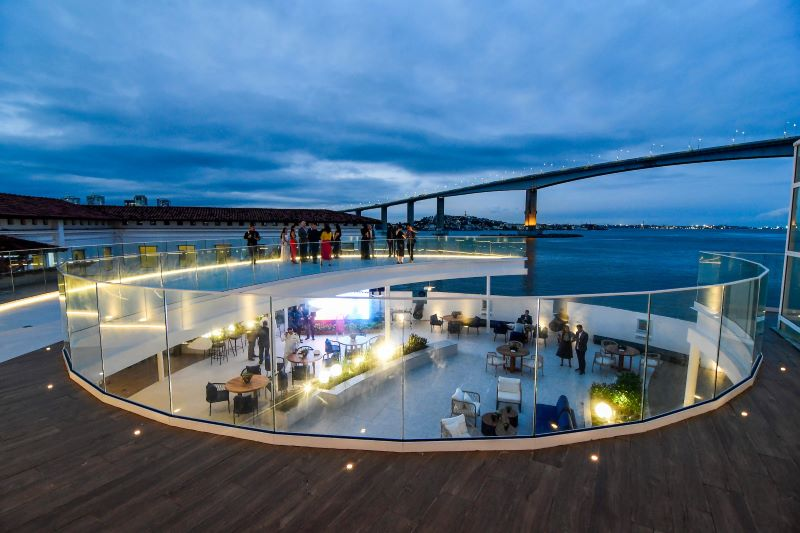
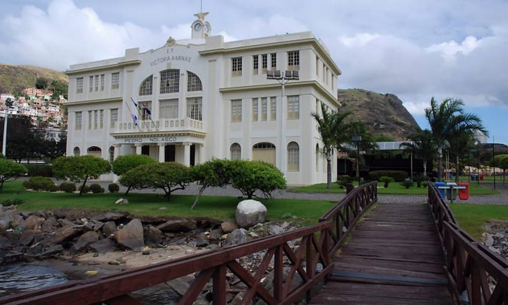

Descubra o Berço da Colonização Brasileira
Cidade histórica com 488 anos de tradição, praias paradisíacas e o famoso Convento da Penha
Sobre Vila Velha
Vila Velha foi fundada em 23 de maio de 1535 pelo português Vasco Fernandes Coutinho, donatário da capitania do Espírito Santo. Ao ser fundada, Vila Velha tinha o nome de “Vila do Espírito Santo”.
Desse modo, a cidade foi sede da capitania até 1549 quando passou a ser chamada do seu atual nome Vila Velha, mesmo período em que a sede da capitania foi transferida para Vitória.
Uma curiosidade é que em Vila Velha fica a Igreja mais antiga do Espírito Santo, a Igreja do Rosário.
Pontos Turísticos de Vila Velha
-
Convento da Penha
-
Morro do Moreno
-
Forte de São Francisco Xavier da Barra
-
Ciclovia Ponte Madalena
-
Museu da Vale
As Melhores Praias de Vila Velha
- Praia da Costa
- Praia do Bananal
- Praia Secreta
- Praia da Barra
- Praia de Ponta da Fruta
Como Chegar
De Avião
Aeroporto Eurico de Aguiar Salles (Vitória) - 15 km de distância. Táxi, Uber ou transfer disponíveis.
De Carro
Pela BR-101 (Rio-Bahia) ou ES-060. Acesso fácil pela Terceira Ponte.
De Ônibus
Rodoviária de Vila Velha recebe linhas interestaduais. Transcol conecta com toda a Grande Vitória.
Dicas para Quem quer Viajar para Vila Velha
Melhor Época para Visitar
Abril a Setembro: Menos chuva, temperaturas mais amenas (20-28°C), ideal para caminhadas e turismo histórico.
Outubro a Março: Verão, mais quente e úmido, perfeito para praias. Dezembro a fevereiro é alta temporada.
Evite: Janeiro (muito movimento) e junho/julho (mais frio para praia).
O que Levar
- Protetor solar FPS 60+ - Sol forte o ano todo
- Chapéu ou boné - Proteção essencial
- Óculos de sol - Reflexo do mar e areia
- Roupas leves - Algodão e tecidos frescos
- Chinelo - Para as praias
- Canga ou toalha - Para a praia
- Câmera ou celular - Muitos pontos instagramáveis
- Garrafinha de água - Para se hidratar
- Dinheiro - Nem todos os lugares aceitam cartão